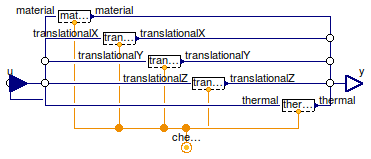

Table of Contents
- User's Guide
- Blocks
- Conditions
- Assemblies
- Regions
- Subregions
- Connectors
- Characteristics
- Units
- Quantities
- BaseClasses
Download
- Latest version (**Empty; please check back soon or contact kdavies4 at gmail.com.)

| Name | Description |
|---|---|
| ChemicalNet | Condition for a ChemicalNet connector, with efforts by default |
| ChemicalNetNoFlow | Condition for a ChemicalNet connector, with zero flows by default |
| Conditions for additivity of volume | |
| Translational conditions | |
| Conditions for thermal advection | |
| Base classes (generally not for direct use) |
 FCSys.Conditions.ByConnector.ChemicalNet.ChemicalNet
FCSys.Conditions.ByConnector.ChemicalNet.ChemicalNet
| Type | Name | Default | Description |
|---|---|---|---|
| Conditions | |||
| ReactionRate | material | redeclare Material.ReactionR… | Material |
| Velocity | translationalX | redeclare Translational.Velo… | X-axis translational |
| Velocity | translationalY | redeclare Translational.Velo… | Y-axis translational |
| Velocity | translationalZ | redeclare Translational.Velo… | Z-axis translational |
| SpecificEntropyTemperature | thermal | redeclare Thermal.SpecificEn… | Thermal diffusion |
| Assumptions | |||
| Axes with translational momentum included | |||
| Boolean | inclTransX | true | X |
| Boolean | inclTransY | true | Y |
| Boolean | inclTransZ | true | Z |
| Type | Name | Description |
|---|---|---|
| ChemicalNet | chemical | Connector for a chemical reaction |
| RealInputBus | u | Input bus for values of specified conditions |
| RealOutputBus | y | Output bus of measurements |
model ChemicalNet "Condition for a ChemicalNet connector, with efforts by default" import FCSys.BaseClasses.Utilities.countTrue; import FCSys.BaseClasses.Utilities.enumerate; import FCSys.BaseClasses.Utilities.index; extends FCSys.BaseClasses.Icons.Conditions.Single; // Included components of translational momentum parameter Boolean inclTransX=true "X"; parameter Boolean inclTransY=true "Y"; parameter Boolean inclTransZ=true "Z"; // Conditions replaceable Material.ReactionRate material constrainedby Conditions.ByConnector.ChemicalNet.Material.BaseClasses.PartialCondition "Material"; replaceable Translational.Velocity translationalX(final axis) if inclTransX constrainedby Conditions.ByConnector.ChemicalNet.Translational.BaseClasses.PartialCondition( axis=Axis.x) "X-axis translational"; replaceable Translational.Velocity translationalY(final axis) if inclTransY constrainedby Conditions.ByConnector.ChemicalNet.Translational.BaseClasses.PartialCondition( axis=Axis.y) "Y-axis translational"; replaceable Translational.Velocity translationalZ(final axis) if inclTransZ constrainedby Conditions.ByConnector.ChemicalNet.Translational.BaseClasses.PartialCondition( axis=Axis.z) "Z-axis translational"; replaceable Thermal.SpecificEntropyTemperature thermal(source(y=298.15*U.K)) constrainedby Conditions.ByConnector.ChemicalNet.Thermal.BaseClasses.PartialCondition "Thermal diffusion"; Connectors.ChemicalNet chemical(final n_trans=n_trans) "Connector for a chemical reaction"; Connectors.RealInputBus u "Input bus for values of specified conditions"; Connectors.RealOutputBus y "Output bus of measurements"; protected final inner parameter Integer n_trans=countTrue({inclTransX,inclTransY, inclTransZ}) "Number of components of translational momentum"; final inner parameter Integer cartTrans[n_trans]=index({inclTransX,inclTransY, inclTransZ}) "Cartesian-axis indices of the components of translational momentum"; final inner parameter Integer transCart[Axis]=enumerate({inclTransX, inclTransY,inclTransZ}) "Translational-momentum-component indices of the Cartesian axes"; equation // Material connect(material.chemical, chemical); connect(u.material, material.u); connect(material.y, y.material); // X-axis translational connect(translationalX.chemical, chemical); connect(u.translationalX, translationalX.u); connect(translationalX.y, y.translationalX); // Y-axis translational connect(translationalY.chemical, chemical); connect(u.translationalY, translationalY.u); connect(translationalY.y, y.translationalY); // Z-axis translational connect(translationalZ.chemical, chemical); connect(u.translationalZ, translationalZ.u); connect(translationalZ.y, y.translationalZ); // Thermal advection // Thermal diffusion connect(thermal.chemical, chemical); connect(u.thermal, thermal.u); connect(thermal.y, y.thermal); end ChemicalNet;
FCSys.Conditions.ByConnector.ChemicalNet.ChemicalNetNoFlow
| Type | Name | Default | Description |
|---|---|---|---|
| Assumptions | |||
| Axes with translational momentum included | |||
| Boolean | inclTransX | true | X |
| Boolean | inclTransY | true | Y |
| Boolean | inclTransZ | true | Z |
| Type | Name | Description |
|---|---|---|
| ChemicalNet | chemical | Connector for a chemical reaction |
| RealInputBus | u | Input bus for values of specified conditions |
| RealOutputBus | y | Output bus of measurements |
model ChemicalNetNoFlow "Condition for a ChemicalNet connector, with zero flows by default" extends ChemicalNet( redeclare replaceable Conditions.ByConnector.ChemicalNet.Material.Potential material, redeclare replaceable Translational.Force translationalX(final axis), redeclare replaceable Conditions.ByConnector.ChemicalNet.Translational.Force translationalY(final axis), redeclare replaceable Conditions.ByConnector.ChemicalNet.Translational.Force translationalZ(final axis), redeclare replaceable Conditions.ByConnector.ChemicalNet.Thermal.HeatRate thermal); // Note: Dymola 7.4 requires that the redeclared models are // resolved to the root of the library, e.g., // "Conditions.ByConnector.ChemicalNet.Material.Potential" // instead of // "Material.Potential". // Otherwise the following error is given: // "Cannot show paramter [sic] dialog for redeclared class […] since: // Could not find type of redeclare :[…] in scope […]" // Similar notes apply to the other top-level extended models in // FCSys.Conditions.ByConnector. end ChemicalNetNoFlow;